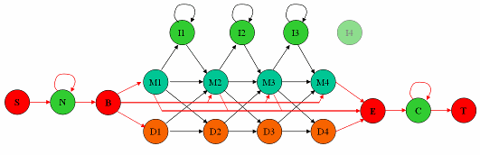

Create or edit hidden Markov model (HMM) profile structure
Model = hmmprofstruct(Length)Model = hmmprofstruct(Length, Field1, Field1Value, Field2, Field2Value,
...)NewModel = hmmprofstruct(Model, Field1, Field1Value, Field2, Field2Value,
...)
Length | Number of match states in the model. |
Model | MATLAB® structure containing fields for the parameters
of an HMM profile created with the hmmprofstruct function. |
Field | String containing a field name in the structure Model.
See the table below for field names. |
FieldValue | Value associated with Field. See
the table below for descriptions. |
Model | MATLAB structure containing fields for the parameters of an HMM profile. |
Model = hmmprofstruct(Length)Model,
a MATLAB structure containing fields for the parameters of an
HMM profile. Length specifies the number
of match states in the model. All other required parameters are set
to the default values.
Model = hmmprofstruct(Length, Field1, Field1Value, Field2, Field2Value,
...)
NewModel = hmmprofstruct(Model, Field1, Field1Value, Field2, Field2Value,
...)Model.
The MATLAB structure Model contains
the following fields, which are the required and optional parameters
of an HMM profile. All probability values are in the [0 1] range.
| Field | Description | ||
|---|---|---|---|
ModelLength | Integer specifying the length of the profile (number of MATCH states). | ||
Alphabet | String specifying the alphabet used in the model. Choices are 'AA' (default)
or 'NT'.
| ||
MatchEmission | Symbol emission probabilities in the MATCH states. Either of the following: | ||
InsertEmission | Symbol emission probabilities in the INSERT state. Either of the following: | ||
NullEmission | Symbol emission probabilities in the MATCH and INSERT states for the NULL model. Either of the following:
| ||
BeginX | BEGIN state transition probabilities. Format
is a 1-by- [B->D1 B->M1 B->M2 B->M3 .... B->Mend]
Default is | ||
MatchX | MATCH state transition probabilities. Format
is a 4-by- [M1->M2 M2->M3 ... M[end-1]->Mend; M1->I1 M2->I2 ... M[end-1]->I[end-1]; M1->D2 M2->D3 ... M[end-1]->Dend; M1->E M2->E ... M[end-1]->E ]
Default is | ||
InsertX | INSERT state transition probabilities. Format
is a 2-by- [ I1->M2 I2->M3 ... I[end-1]->Mend; I1->I1 I2->I2 ... I[end-1]->I[end-1] ]
Default is | ||
DeleteX | DELETE state transition probabilities. Format
is a 2-by- [ D1->M2 D2->M3 ... D[end-1]->Mend ; D1->D2 D2->D3 ... D[end-1]->Dend ]
Default is | ||
FlankingInsertX | Flanking insert states (N and C) used for LOCAL profile alignment. Format is a 2-by-2 matrix: [N->B C->T ; N->N C->C]
Default is | ||
LoopX | Loop states transition probabilities used for multiple hits alignment. Format is a 2-by-2 matrix: [E->C J->B ; E->J J->J]
Default is | ||
NullX | Null transition probabilities used to provide scores with log-odds values also for state transitions. Format is a 2-by-1 column vector: [G->F ; G->G]
Default is | ||
IDNumber | Optional. User-assigned identification number. | ||
Description | Optional. User-assigned description of the model. |
An HMM profile model is a common statistical tool for modeling structured sequences composed of symbols. These symbols include randomness in both the output (emission of symbols) and the state transitions of the process. Markov models are generally represented by state diagrams.
The following figure is a state diagram for an HMM profile of length four. INSERT, MATCH, and DELETE states are in the center section.
INSERT state represents the excess of one or more symbols in the target sequence that are not included in the profile.
MATCH state means that the target sequence is aligned to the profile at the specific location.
DELETE state represents a gap or symbol absence in the target sequence (also known as a silent state because it does not emit any symbols).
Flanking states (S, N, B, E, C, T)
are used for proper modeling of the ends of the sequence, either for
global, local or fragment alignment of the profile. S, B, E,
and T are silent, while N and C are
used to insert symbols at the flanks.

Creating an HMM Profile Structure
Create an HMM profile structure with 100 MATCH states, using the amino acid alphabet.
hmmProfile = hmmprofstruct(100,'Alphabet','AA') hmmProfile = ModelLength: 100 Alphabet: 'AA' MatchEmission: [100x20 double] InsertEmission: [100x20 double] NullEmission: [1x20 double] BeginX: [101x1 double] MatchX: [99x4 double] InsertX: [99x2 double] DeleteX: [99x2 double] FlankingInsertX: [2x2 double] LoopX: [2x2 double] NullX: [2x1 double]
Editing an HMM Profile Structure
Use the pfamhmmread function
to create an HMM profile structure from pf00002.ls,
a PFAM HMM-formatted file included with the software.
hmm02 = pfamhmmread('pf00002.ls');Modify the HMM profile structure to force a global alignment by setting the looping transition probabilities in the flanking insert states to zero.
hmm02 = hmmprofstruct(hmm02,'FlankingInsertX',[0 0;1 1]);
hmm02.FlankingInsertX
ans =
0 0
1 1